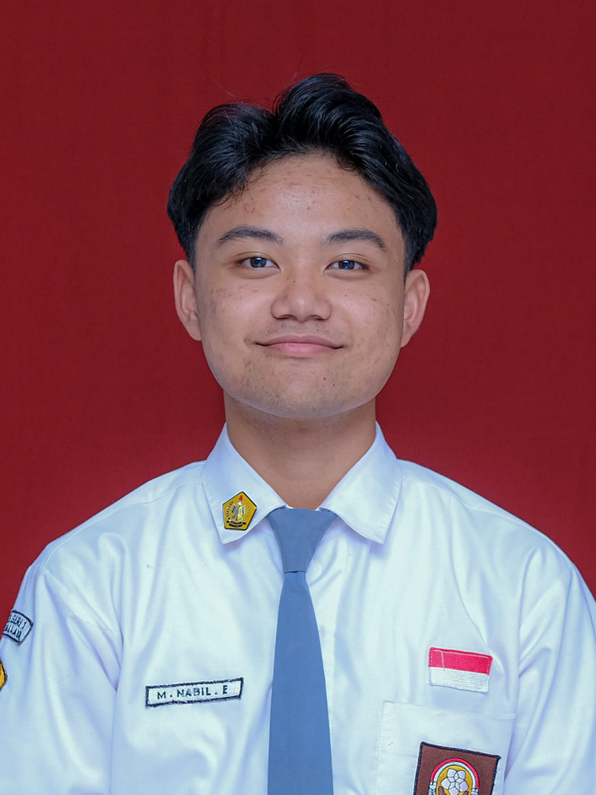

Muhammad Nabil Efendi
Perkenalkan, saya Muhammad Nabil Efendi, siswa kelas XI-4 SMAN 1 Tasikmalaya,
yang lahir di Ciamis pada 11 April 2010. Dalam project ini, saya berperan
sebagai ketua Kelompok 1 sekaligus salah satu pengembang utama website yang
kami buat. Bagi saya, website ini bukan sekadar tugas sekolah yang selesai lalu
ditinggalkan. Saya ingin mengembangkan website ini dengan serius, terkonsep,
dan memiliki kualitas yang layak untuk dipublikasikan. Mulai dari ide, desain,
hingga proses coding, saya ingin setiap bagian dari website ini memiliki tujuan
dan identitasnya sendiri. We don't just build it, we make it worth publishing.
Saya menempuh pendidikan di SDN 2 Cibeureum, kemudian melanjutkan ke
SMPN 5 Tasikmalaya, dan sekarang bersekolah di SMAN 1 Tasikmalaya. Saya memiliki
ketertarikan yang cukup besar terhadap dunia TIK dan teknologi, terutama dalam hal
editing, pembuatan film, desain, produksi musik, dan tentunya coding. Saya suka
mencoba hal-hal baru dan mengubah sebuah ide menjadi sesuatu yang bisa benar-benar
dibuat dan digunakan. Di luar dunia teknologi dan kreativitas, saya juga memiliki
hobi bermain basket dan badminton. Bagi saya, proses belajar dan berkarya adalah
tentang terus mencoba, melakukan kesalahan, memperbaiki, lalu berkembang.
Create something, learn something, and keep improving.